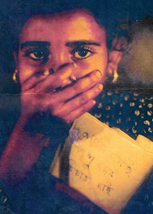

|
World-wide
Oppression and Protest from Mukto-mona
Mukto-mona is not only a discussion forum; it also
appears as an action group. We raise our
voices against many unjust acts around the globe. We
sent petitions to the President of Pakistan, General
Pervez Musharraf for saving the life of Dr M Younus
Shaikh, to the Prime minister of Bangladesh, Begum
Khaleda Zia showing concerns at the recent spate of
atrocities committed against the Hindu community in
Bangladesh and for the release of Shahriar Kabir, the
well-known writer, journalist. The petitions can be
viewed at :
 Petition
to stop Post-Election Violence and Minority Repression
(Monday, December 10, 2001.) Petition
to stop Post-Election Violence and Minority Repression
(Monday, December 10, 2001.)
Mukto-mona also supported Drishtipat (
http://www.drishtipat.org ) on their Fund raise
campaign ("Cheye Dekho Campaign") for the recent
minority victims of Bangladesh (Nov-Dec, 2001). Some of
our members have been directly involved with Drishtipat
on their efforts.
We also expressed our concerns for Urgent Action
Appeal for 10 Prisoners of Conscience in danger of
execution in Iran.
Oppressed
World
Write
to Bangladesh Government : By
Dr. Abdul Momen
|
(Warning:
Some pictures in this article may not be
suitable for some viewers, please take
appropriate guidance) |
Dear Friends, The names of many
victims have been published in a book along with
dozens of photographs but the Bangladesh
government banned its distribution outside. No
one can carry these reports abroad. A few
persons that tried to take them out of the
country have been ...(Read
more) |
Sexual
Harassment and the Public Woman : By Dina M. Siddiqi
|
The frenzy of harassment, gang
rape and subsequent suicides in the last two
months has made it difficult to keep track of
the specifics of each incident. Fahima, Rahima,
Indrani, Sabina -- these names and the horrific
events associated with them have begun to blur
into one another. In addition there are women,
like the two ..(Read
more) |
"Annada
Prasad" Cries in Silence & Anguish By
Dr. Ajoy K. Roy
|
 |
Bhola a remote district from the
capital surrounded by on all sides rivers and
riverines, on the south lies the Bay of Bengal,
is made of coastal plain land not much above 5
ft from sea level. On the eastern side the
mighty Meghna flows into Bay, whereas on the
north and western side river Tetulia, a branch
of Meghna falls into Bay. From this point of
view it is an island floating on the bay.The
district administration extends main Bhola and a
few islands (chars) including Rajapur, Gangapur,
Charpatila, ....(Read
more) Visit: Prof.
Roy's world - "The
oppressed Minorities"
 |
Ethnic
Cleansing In Bangladesh
by Rahul Gupta
 |
Hindus comprised nearly 30% of
the total population in Bangladesh in 1947.
After the exodus of minorities following the
partition of India in 1947, the hindu population
went down to about 22% by 1951. Due to unabated
persecution, intimidation, and forcible
conversion to Islam, the Hindu-Minority
population kept on dwindling and now stands at a
meager 10.5% of the total population in
Bangladesh (1991 census). Interesting to
note that minority Muslim population in
adjoining West Bengal (India) showed a positive
growth rate , . ...(Read
more) |
Report of the Public
Inquiry Commission
State of
Minorities in Bangladesh: By Saleem Samad
1. Bicharer
Bani Nirabe Nivrite Kande: Nazirpur minorities
in the peril 2.
A horror story of Banskhali by
Dr.
Ajoy Roy
Dr.
Ajoy Roy's interview with Prothom-alo on Minority Situation in Bangladesh
(Bangla)
Human
Rights Violations and Persecution of minorities in Bangladesh
by
Dr. Mohsin Ali

Part1
Part2
Part3
Part4
Part5
Part6 Part7
Part8
Part9
Part10a
Part10b
Read more:
Jamal
Hasan writes to Saleem Samad
Shahriar Kabir
transformed into Dhrubo Tara
Ethnic
Cleansing In Ahmedabad
Forwarded
by Farruk
Ahmed
|
|
The recent widespread communal
violence in Gujarat has shocked the world. The
UN Human Rights Commissioner Mary Robinson has
also voiced her deep concern. People from all
walks of life in India have reacted with shock
and dismay. ...(Read
more) |
|

|

|

|
|
|
|
|
|
|
|
|
Trial
of the murderers of Gujarat. Letter to NHRC re. the Best Bakey Case.
A
petition from Mukto-mona
To: The National Human Rights Commission of
India
[Please join us in sharing concern about a free investigation into
the Gujarat pogrom followed by a fair trial of the accused. Append your
name to the below letter. On the 21th of July 2003 we will send this the
National Human Rights Commission of India (NHRC).
... .. . ... (Read
and sign)
|
|
|
|
|

|
|

|
|
|
Palestinian
suffering : Forwarded
by Lopa Tasneem
|
|
A recent essay by Edward Said on
the Palestine issue here. A short biography of
Edward Said from The Nation: Edward W. Said, the
University Professor of English and Comparative
Literature at Columbia University, is the
magazine's classical music critic as well as ...(Read
more) |
Eyewitness
report from Ramallah : Forwareded
by Saptarshi Ray
|
Ramallah, Occupied Palestine: My
name is Tzaporah Ryter. I am an American student
from the University of Minnesota. I currently am
in Ramallah. We are under a terrible siege and
people are being massacred by both the Israeli
army and armed militia groups of Israeli
settlers. ...(Read
more) |
CHAIN OF ISLAM !
An appeal to
Save Dr. Shaikh by
Satya Sondhani
|
|
Dear readers, Have a look at
CHAIN OF ISLAM ,the greatest and the most
tolerant religion on this earth, according to
some claims !! And yes,the person in picture is
none but Dr. Younus Shaikh of Pakistan, one
among thousands of those of US, who have been on
their way to be annihilated from earth FOR.....
simply exercising common sense.
Readears, be cautious while
reading/thinking/speaking/teaching this fatal
weapon called I-S-L-A-M. I feel for you.....(Read
more) |
Bangladesh
intellectuals appeal to save the life of Dr Shaikh
Alan Levin's call to Save Dr. Shaikh in
Mukto-mona
Mukto-mona Modrator's call to Save Dr.
Shaikh
Poison
pill of Sharia: An affront to the civil society By Jamal Hasan
My
Lost Country - Kashmir : By
Muzamil Jaleel
|
|
Not long ago, somebody asked me
what kind of stories I wrote. Obituaries came to
mind. As a reporter in Kashmir I have been
literally writing obituaries for the past 10
years; only the characters and places change,
the stories are always the same, full of misery
and tears. And when in October last
year ...(Read
more) |
Let the sense of
Censor Board Returns:
Remove Ban From "Matir
Moina"
|
|
We already know that Bangladeshi
film 'Matir Moyna' by Tariq and Catherine Masud
has earned a rare distinction and honor for the
country from the international Cannes film
festival. Matir Moyna was adjudged the best film
out of 40 films shown in Director's fortnight
and International Critics' Week. But it is very
unfortunate for our country that the film is
still banned ....(Read
more) |
Sign the petition - Remove the ban on
MATIR MOINA
Petition
|
Bangladeshi
Nation Demand Justice |
|
To:
The Secretary General
United Nations Organization
Dear Mr. Kofi Anan,
With all due respect, we would like to bring to
your notice one of the most horrible genocide of
the 20th century that had occurred in 1971 in
the then East Pakistan, which is now known as
Bangladesh.
On 25th March 1971 at around midnight, the
ferocious Pakistani army had come out from the
barracks and massacred the unarmed, innocent and
sleeping people. 3,000,000 people were
massacred, 200,000 women were raped and hundreds
of villages were burnt to ashes and razed to the
ground from 25th March till 16th December 1971.
Millions of people lived in tents on the other
side of the border facing starvation and famine (Read
more and sign)
|
|
Save
Dr. Younus Shaikh |
|
I am shocked and horrified at the
death penalty awarded to Dr. Shaikh. I hereby call on
all governments to put moral and diplomatic pressure
on the government of Pakistan to get Dr. Shaikh
released and to offer him refuge. I urge the President
of Pakistan General Musharraf (Read
more and sign) |
|
Call
from Mukto-mona to Stop Brutal Extermination of
Palestinians ! |
| To:
All concerned Authorities The
recent actions of the government of Ariel
Sharon have gone far, far beyond the
boundaries of acceptable conduct from any
government. The Israeli government has
supposedly lurched into action because of the
suicide bombings carried out by the
Palestinians. However, the distinction that
must be made here is that an elected
government that allegedly operates following
democratic norms and conditions, should not
respond by indiscriminate attacks upon a
civilian population to “capture”
militants. The Israeli government has
proclaimed that their all out offensive on the
Palestinians is a success as they have already
captured “terrorist” leaders and active
militants. However, the question that needs to
be asked is whether the price that innocent
have to pay for this “success” of Israel
is either worth it or acceptable.. (Read
more)
|
| Petition
from Drishtipat for Tarek Chowdhury and Ajharul Hoque |
|
To: Prime Minister of
Bangladesh
Prime Minister Khaleda Zia
Office of the Prime Minister
Gona Bhaban
Sher-e-Bangla Nagar
Dhaka
Bangladesh
We the undersigned are greatly concerned over the
arrest on 13 March 2002 of two staff members of the
non-governmental organization, Proshika ("A
Centre for Human Development") has raised
serious concern about the Bangladeshi government's
observance of its obligations under international
human rights law to ensure the right to freedom of
expression. (Read
more and sign)
|
|
 Ishtiaq Ahmed
Ishtiaq Ahmed